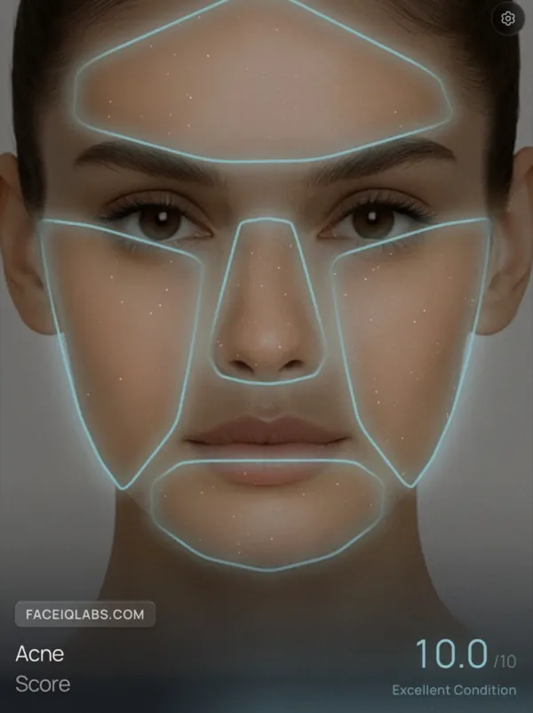
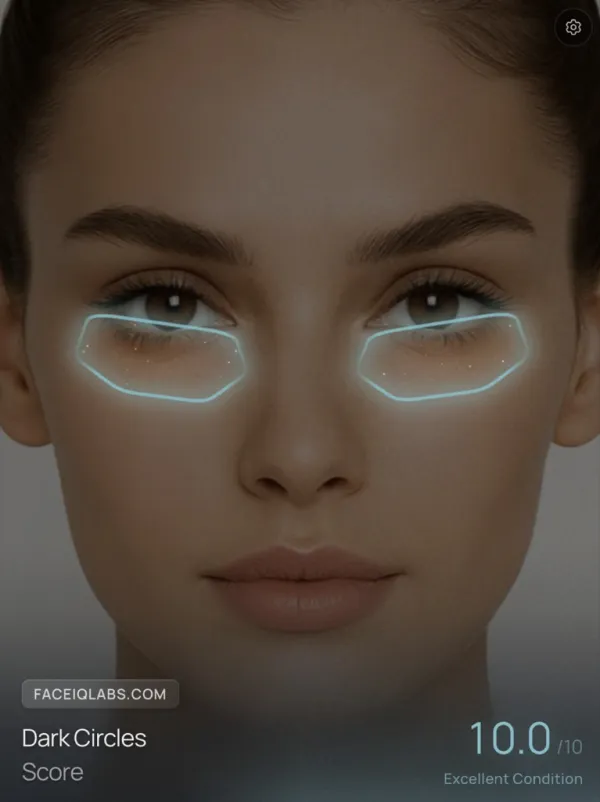
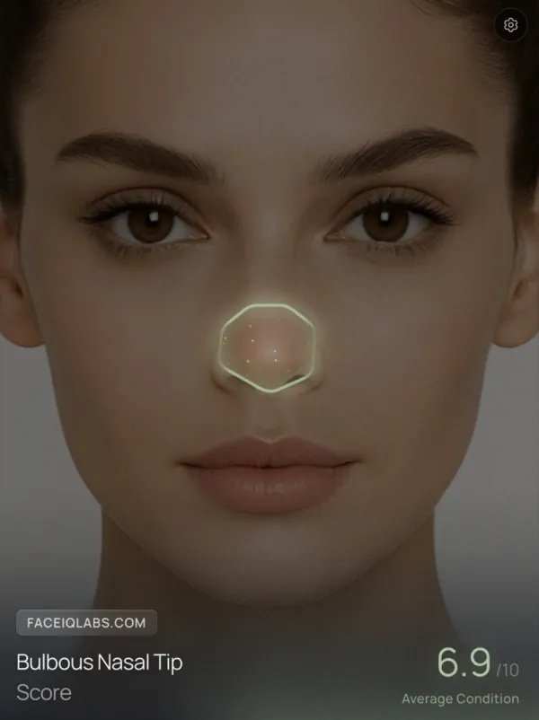
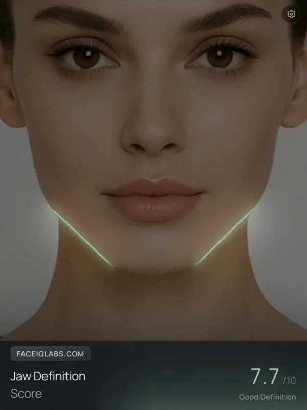
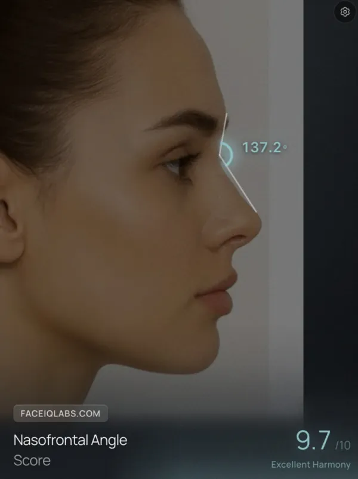
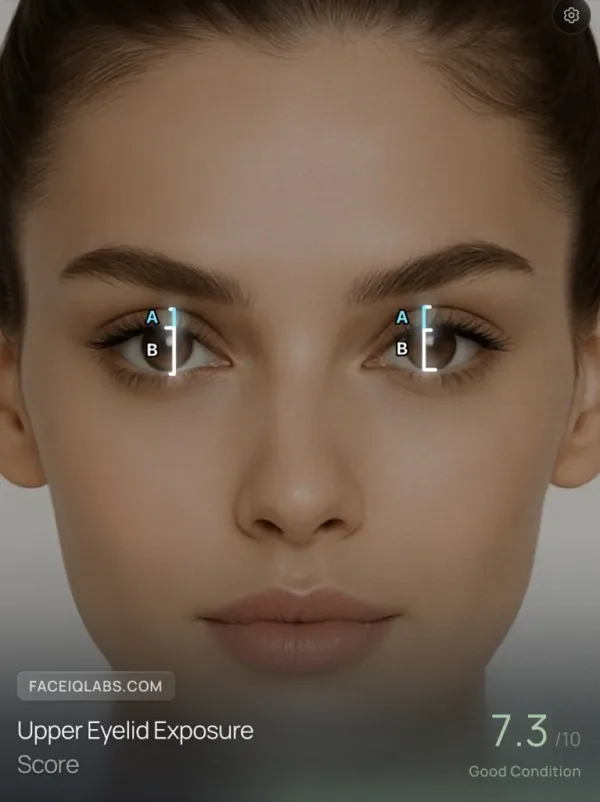

Pillar 1
Harmony
Facial proportional balance
450,000+ users · 2,500,000+ analyses
Analyze your face across 100+ metrics, get a personalized plan, and track your progress over time.
For those serious about self-improvement.
Commitment pays off
2.5 years of real commitment, every step tracked.
Overall facial score over 2.5 years
The people who get results aren't gifted — they're committed. They track every change, follow the data, and stay the course.
Analysis Pillars
Each pillar measures a different aspect of your facial structure.
Facial proportional balance

Jawline & bone structure definition

Gender-specific trait measurement
Skin health, symmetry & feature analysis
Built by the team behind the industry's first facial harmony system — for those who take their appearance seriously.
Analysis is step one. Track progress, simulate changes, get expert guidance — every week.
Score across 4 pillars with 70+ precise facial ratios.
Ask anything about your face — instant expert answers.
See what procedures would look like before you commit.
A personalized roadmap based on your unique scores.
Side-by-side analysis with detailed breakdowns.
Compete for the top spot on the leaderboard.
Conversational AI that answers any question about your face — and creates complex morphs in seconds with simple language.
+100 metrics to track your transformation
Detailed assessments
From skin health to facial harmony ratios.






Four steps. One cycle. Ongoing improvement.
Take a front and side photo.
Get your complete analysis across 4 pillars — harmony, angularity, dimorphism, and features.
Receive a personalized roadmap with non-surgical and surgical options ranked by impact.
Follow your plan. Simulate changes. Ask FaceGPT along the way. Re-analyze over time and see how your scores move.
Side profile analysis is free.
Score Projection
Small, consistent changes compound over time. Track your progress and watch your score move.
A note on who this is for
Most people see their score and do nothing. They let the number define them. The ones who actually transform treat it as a starting point — and commit to the process.
FaceIQ Labs is built for them.
Real results from real users.
"FaceIQ Labs is a quality app. You get exactly what you pay for. I would recommend it to anyone seeking aesthetic improvement or just curious where they stand."
"The analysis confirmed things I'd always suspected about my facial structure but could never quantify. Now I know what to improve and how."
"My scores were solid overall, but I wanted to target my skin and under-eye area. FaceIQ Labs is the only tool that gave me genuinely accurate, actionable insights."
"The app helped me map out exactly where my strengths and weaknesses are, so I can focus my improvement efforts where they'll actually make a difference."
"Hands down the best facial analysis tool available. The depth of measurement is unmatched, and the personalized improvement plans keep me coming back."
"FaceIQ Labs gave me a clear, complete roadmap for improving my appearance — not just surgery, but practical, everyday steps to look and feel more attractive."
"I initially signed up to see my score, but I ended up booking an appointment with my surgeon thanks to the advice they provided. This is a real story about how this app helped me improve."
450,000+ people have started their journey. The question is — will you?
Your future self will thank you.